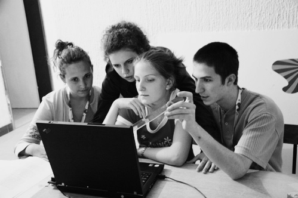
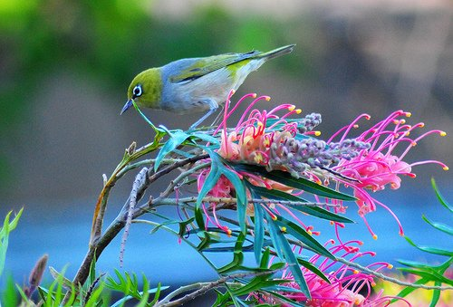
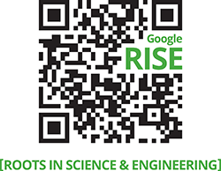
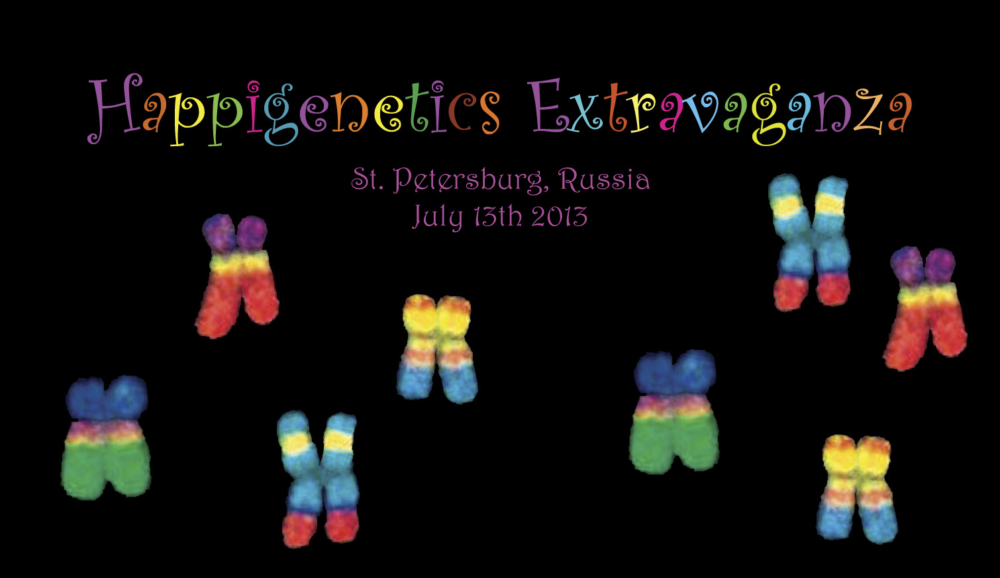

PROJEKTI
Ljetna škola znanosti (Summer School of Science)
Ovaj projekt namijenjen je visoko motiviranim učenicima srednjih škola u Hrvatskoj i inozemstvu, kako bi kroz rad na znanstvenim problemima s mentorima razvili osnove znanstvene pismenosti te mrežu kontakta sa stručnjacima koja će im biti od koristi u budućoj karijeri. U okviru ovog projekta, svake godine intenzivan trening u znanstvenoj metodi prođe 30-tak učenika, a 10-tak mladih znanstvenih stručnjaka stekne iskustvo rada u edukaciji. Ljetna škola znanosti sastoji se od dva kampa, ukupnog trajanja 18 dana.
Link: Internet stranica Ljetne škole znanosti
EVO Internship Portal
EVO Internship Portal je online platforma čiji je cilj olakšati studentima iz Hrvatske da pronađu i prijave se za prakse u istraživačkim laboratorijima diljem Europe. Osim pružanja informacija o laboratorijima i projektima koje nude, cilj nam je i ponuditi izravnu pomoć pri pisanju prijava za prakse te financiranje istih. Udruga EVO, sa svojim bogatim iskustvom u sličnim programima i brojnim kontaktima unutar mreže alumnija Ljetne škole znanosti, tako služi kao snažna veza između studenata i zainteresiranih laboratorija te doprinosi daljnjoj edukaciji i usavršavanju.
Link: Internet stranica EVO Internship Portala
Radionica 'Susret znanosti i umjetnosti' s temom BIORAZNOLIKOST
Ova radionica održat će se u Brelima, 25-31. kolovoza 2014. Organizirana je u suradnji s prof. Ivanom Đikićem (Goethe University, Frankfurt) i akademskom kiparicom Ivankom Filipović te je dio Meeting Art Place (MAP) Brela 2014 Residence programa. Ova radionica ima za cilj razvoj otvorenog, transdisciplinarnog pristupa za angažman javnosti u znanosti među entuzijastičnim mladim umjetnicima i znanstvenicima. Potaknut će integraciju umjetničke i znanstvene prakse preko projekata gdje će sudionici će imati prilike eksperimentirati s različitim oblicima kreativnog izražaja. Zajedno će pripremiti improviziranu predstavu iz šireg područja bioraznolikosti te izložiti radove izrađene tijekom radionice. Nadamo se da će naše aktivnosti pomoći da se sruše umjetne barijere između znanosti i umjetnosti, dati inspiraciju sudionicima u njihovim svakodnevnim aktivnostima te rasvijetliti velike izazove s kojima je suočena današnja globalna zajednica. Osim toga, nadamo se pozitivno djelovati na javnu svijest i utjecati na povećanje podrške politikama održivog razvoja.
Organizacijski tim: Branko Đurđević, Alexander Kagansky, Martina Mijušković, Lucija Šilić.
VAŽNO! Prijave za radionicu su produžene do 20. srpnja 2014. Više informacija nalazi se u Opisu radionice i Obrascu za prijave.
SiS Catalyst
Društvo za edukaciju van okvira pozvano je kao jedna od 36 organizacija iz 20 zemalja u „mentoring associates“ dio FP7 europskog projekta „SiS Catalyst“. Cilj je izmjena iskustva iz komunikacije znanosti, edukacije i društvenog uključivanja različitih sveučilišta, mreža, znanstvenih institucija, muzeja i nevladinih organizacija. Kroz 18 mjeseci koliko projekt traje, očekuje se razmjena iskustava i znanja koja će poslužiti kao platforma za daljnje širenje dobre prakse. Partner Društvu za edukaciju van okvira je udruga Paris-Montagne iz Francuske. Dobivenih 10.000 eura utrošit će se u uzajamnu razmjenu iskustava kroz posjete edukatora i polaznika između dvije udruge.
Link: SiS Catalyst
Google RISE
Edukacijski projekt koji je nastao kao suradnja projekata Ljetne tvornice znanosti, Instituta sinergije znanosti i društva i Društva za edukaciju van okvira dobitnik je prestižne nagrade Goolge RISE (Roots In Science and Engeneering). Natječaj je namijenjen projektima u kojima se djecu potiče na bavljenje STEM aktivnostima (STEM=science, technology, engineering and mathematics - znanost, tehnologija, inženjerstvo i matematika). Nagrada iznosi 15.000 dolara, a planira se utrošiti za otvaranje laboratorija u Čakovcu, Splitu i Zagrebu. Iznos dobiven na natječaju omogućit će nabavljanje osnovne opreme, troškove korištenja prostora, putne troškove za dolazak mentora i učenika u druge gradove te organizaciju zajedničkih obuka.
Link: Google RISE
Happigenetics Extravaganza
 Happigenetics Extravaganza, eksperiment u komunikaciji znanosti i tehnologije putem umjetnosti, suradnja je između Društva za edukaciju van okvira, Science on Stage (Edinburgh, Velika Britanija), Coaxil Band (St. Petersburg, Rusija) i Sounds of Science (New York, SAD). Ova moderna kazališna predstava za sve uzraste bit će izvedena 13. srpnja 2013 u St. Petersburgu, Rusija, prilikom održavanja godišnje konferencije Europske federacije biokemijskih društava (FEBS). Ciljevi ovog projekta su promicanje svijesti šire javnosti o eksperimentalnoj biologiji i kulturi znanstvenih istraživanja, prikazati mističnu estetiku procesa prirodne eksperimentacije, te poništiti umjetno konstruirane granice između znanosti i umjetnosti, disciplina koje su često percipirane kao suprotnosti.
Link: Happigenetics Extravaganza
Copyright © 2011 Društvo za edukaciju van okvira (EVO). Sva prava pridržana.
Web dizajn: Martina Mijušković.